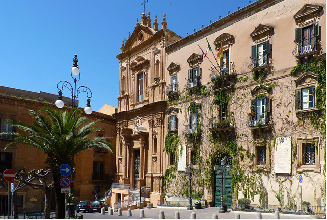
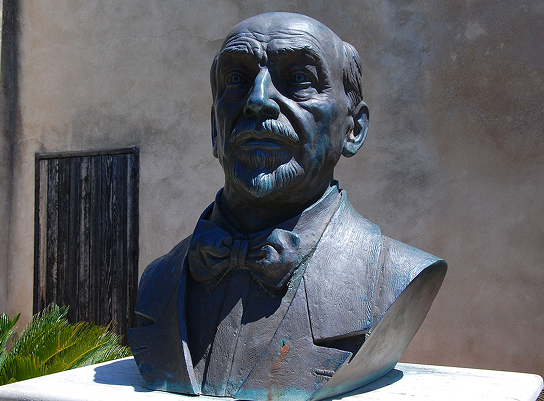
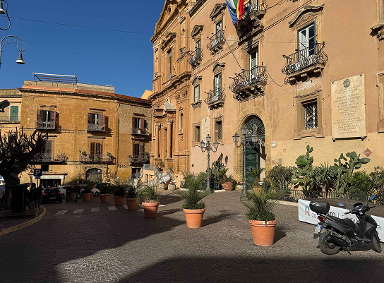
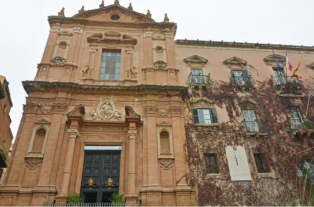

Il cuore di Agrigento
Piazza Pirandello è il cuore culturale e storico della città di Agrigento, un luogo dove arte, memoria e vita quotidiana si incontrano armoniosamente. Ampia e luminosa, la piazza prende il nome dal celebre scrittore Luigi Pirandello, nato in città, e rappresenta uno dei principali punti di riferimento per cittadini e visitatori. Qui si respira un’atmosfera elegante e vivace, che mescola tradizione siciliana e vita contemporanea. Al centro della piazza si staglia il Teatro Pirandello, simbolo della storia teatrale agrigentina, con la sua facciata imponente e raffinata. Attorno alla piazza sorgono palazzi storici e chiese che raccontano secoli di evoluzione urbana, tra stili barocchi e neoclassici.
Le facciate chiare e decorate brillano alla luce del sole, rendendo l’insieme architettonico armonioso e piacevole da ammirare. Durante il giorno, la piazza è animata da cittadini e turisti che si incontrano nei caffè, passeggiano o partecipano a eventi culturali, vivendo lo spazio in maniera autentica. La sera, l’illuminazione pubblica mette in risalto i dettagli architettonici, creando un’atmosfera calda e accogliente. Oltre ai monumenti principali la piazza è costellata di scorci e vicoletti che svelano angoli pittoreschi della città.


tra storia, arte e vita quotidiana
Piccole botteghe artigiane, librerie storiche e locali tipici contribuiscono a rendere la piazza un luogo vivace, dove passato e presente convivono. Passeggiare tra questi spazi permette di osservare dettagli architettonici nascosti e testimonianze artistiche meno conosciute, che arricchiscono l’esperienza del visitatore più attento. La piazza è anche un centro di eventi culturali e sociali: durante l’anno ospita spettacoli teatrali, concerti e celebrazioni civili, diventando un palcoscenico vivo per la città.
Le manifestazioni legate alla tradizione agrigentina e agli eventi letterari in onore di Pirandello rendono la piazza un luogo di incontro e condivisione, dove arte e comunità si fondono. Questo alternarsi di momenti di quiete e di vivace partecipazione fa di Piazza Pirandello un luogo dinamico e ricco di significato. Infine, Piazza Pirandello non è solo uno spazio da osservare, ma da vivere. I profumi dei caffè e delle pasticcerie, il suono dei passi dei passanti e il brusio delle conversazioni creano un’atmosfera unica che cattura i sensi.
